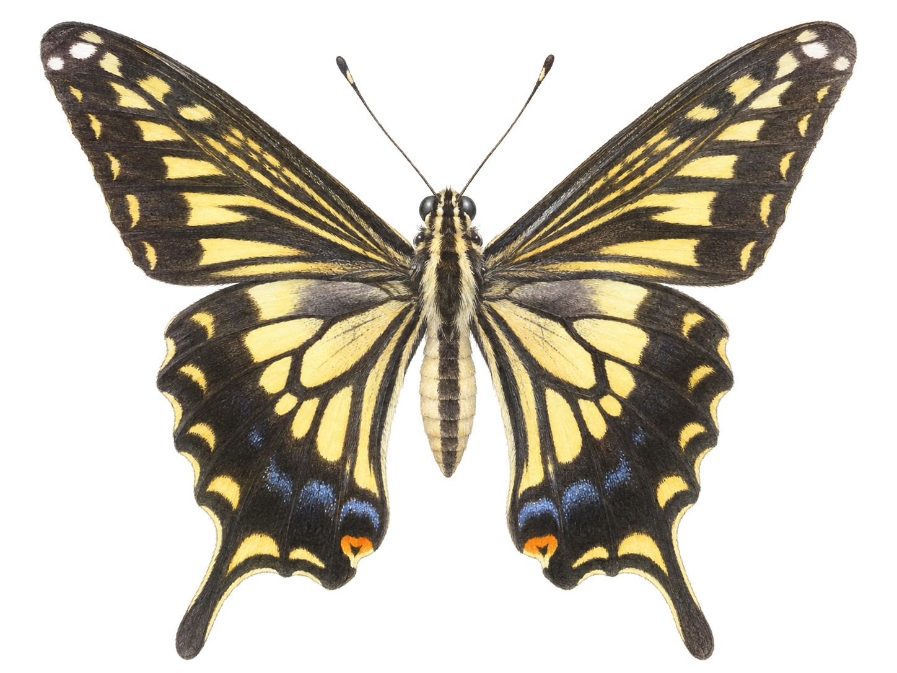

アゲハチョウ科 · 001 / 165
アゲハ（ナミアゲハ）
Papilio xuthus

特徴・見分け方
淡い黄色の地に黒い筋が走る、身近なアゲハ。後翅には尾状突起がある。
雌雄の違い
基本の模様は雌雄で似る。色だけで判定せず腹端の形も確認する。
大きさ
前翅長 35–60 mm（一般的な目安。沖縄個体群だけの実測範囲ではない）
沖縄の島別記録
伊是名島、伊平屋島、水納島（本部町）、瀬底島、伊江島、古宇利島、屋我地島、沖縄本島、浜比嘉島、伊計島、薮地島、津堅島、久高島、瀬長島、渡嘉敷島、座間味島、阿嘉島、慶留間島、粟国島、渡名喜島、久米島、オーハ島、北大東島、南大東島、宮古島、来間島、伊良部島、下地島、多良間島、水納島（多良間村）、石垣島、竹富島、小浜島、黒島、西表島、由布島、波照間島、与那国島、魚釣島。 記録島のすべてで同じ頻度とは限らない。
生息環境
庭、平地の畑、ミカン類のある林縁。
生態・識別上の補足
キアゲハとは前翅の付け根の模様も比較する。色の濃淡だけで決めない。
幼虫・食草
ミカン類やサンショウなどミカン科。若齢幼虫は鳥のふんに似て、成長すると緑色になる。
参照元・参考資料
- 沖縄蝶類生態図鑑：アゲハ（ナミアゲハ）
資料内の参照日: 2026-11-10 - 形態・大きさの補足資料
資料内の参照日: 2026-11-10
掲載内容は提供データ（2026年11月10日更新）に基づきます。記録島は現在の定着や観察の容易さを保証しません。イラストは参考表現で、同定には実物の形態と参照資料を併せて確認してください。